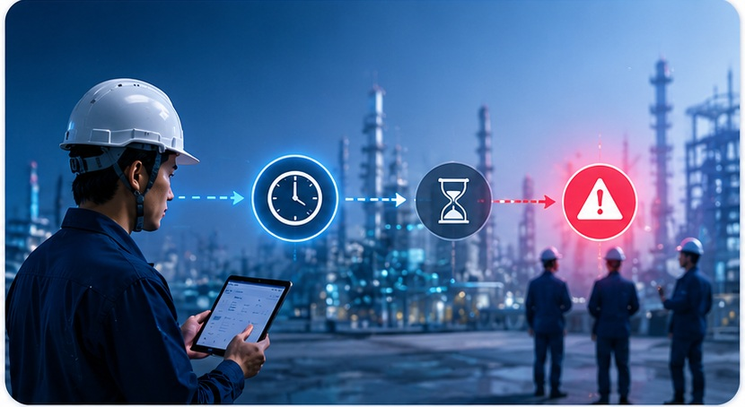
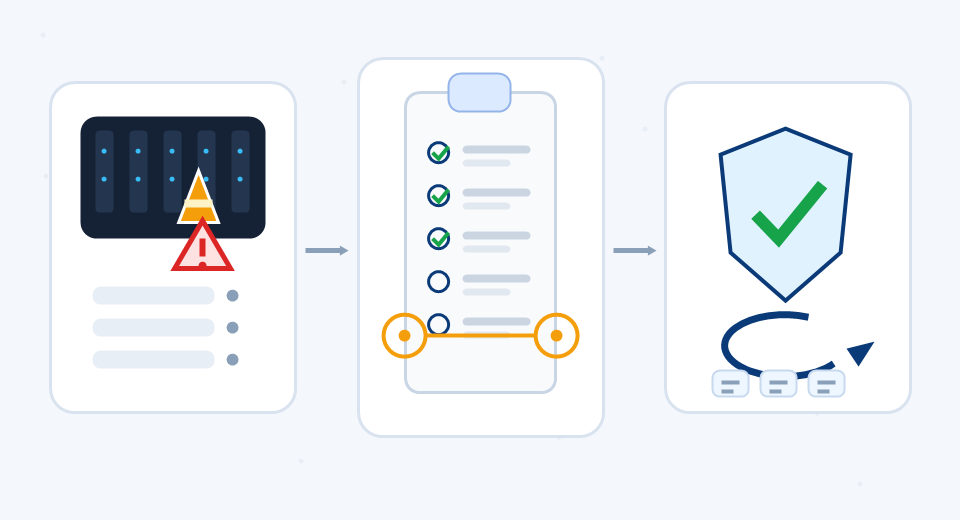

IZUMO SafeOps
Field Safety Operations Coordination Platform
Centralize construction status, zone risks, restrictions, and confirmation records onto a single field status board.

Make field changes visible
Share risks in real time
Make operations and construction safer and more stable
Data Centers · Factories · Ongoing Renovation Sites
Multiple companies working simultaneously, partial areas remaining operational, frequent power outage schedule changes, and ever-changing temporary risks — field information relies heavily on phone calls, Slack, whiteboards, and shared experience.
When information cannot be shared in time, it affects not only the schedule but can also lead to serious safety incidents and operational risks.
IZUMO SafeOps was designed precisely for such field environments.
What is IZUMO SafeOps
IZUMO SafeOps is a "Field Safety Operations Coordination Platform" designed for complex field environments.
It is not a traditional construction management tool, nor a simple project scheduling system.
SafeOps focuses on:
"Is the field truly safe, ready for construction, and operable today?"
Problems SafeOps Solves
Information and management challenges that real-world fields face every day
Scattered Field Information
Critical field information is often scattered across whiteboards, Slack, Excel, phone calls, Teams, and in-person meetings. Information cannot be shared in real time, leading to misunderstandings and omissions.

Field Changes Cannot Be Synced in Time
Power outage cancellations, zone lockdowns, temporary high-risk work, material delays, multi-team construction conflicts — if these changes cannot be shared quickly, it leads to erroneous work and safety incidents.
Multi-Team Coordination Difficulties
At complex sites like data centers, general contractors, subcontractors, equipment vendors, maintenance teams, and overseas system teams often work simultaneously. Without a unified field status sharing mechanism, coordination costs are extremely high.
Safety Experience Cannot Be Preserved
Incident reports and risk experience typically remain trapped in PDFs, Excel files, and emails. Similar problems tend to repeat.
SafeOps Field Operations Status
Grasp the status and risks of every zone in real time
Field Operations Status Board
Updated: 2026-05-28 10:30| Zone | Construction Status | Risk Level | Restrictions | Notes |
|---|---|---|---|---|
| Zone A · South Building | Under Construction | Height Work | Hard hat · Safety harness required | Expected to end 16:00 |
| Zone B · Power Room | Power Outage Work | Restricted Entry | Power outage · Unauthorized personnel prohibited | Power outage 11:00-13:00 |
| Zone C · Central Monitoring | Normal Operations | None | — | Running normally |
| Zone D · Cooling Tower | Preparation | Lifting Work | Crane entry · Surrounding area closed to traffic | Lifting starts 14:00 |
SafeOps Core Features
Share the most important field changes in the simplest way
Field Operations Status Board
Share zone construction status, risk levels, power outage information, restricted areas, and field changes in real time, keeping all relevant personnel informed of the field condition.
Next-Day Construction & Risk Sharing
Centrally manage next-day construction plans, worker counts, power outage requests, high-risk work, and special restrictions to reduce information gaps and communication costs.
Change Notification & Confirmation
When field changes occur — power outage cancellations, zone closures, risk escalations, work changes — the system immediately notifies relevant personnel and confirms receipt and understanding.
10:32 · Unconfirmed
Incident & Risk Records
Centralize incident details, root cause analysis, preventive measures, and horizontal deployment to build a field safety knowledge base and prevent recurring issues.

SafeOps Characteristics

Does Not Add Field Burden
Rather, it reduces field confusion. SafeOps does not pursue complex operations — its focus is on "sharing the most important field changes in the simplest way."

Designed for Complex Operating Sites
Particularly suited for data centers, semiconductor factories, automated logistics facilities, facility renovations during ongoing operations, and multi-team construction sites.

Understanding the Field to Solve Field Problems
Izumo Soan is more than a software developer. With years of hands-on involvement in data center engineering, network and telecommunications construction, and on-site system deployment, we truly understand how the field works.
Use Cases
Fields with ongoing operations, multi-team collaboration, and frequent risk changes


Our Goal
More than just digitizing the field
We aim to "Connect Field, Safety & Operations."
Making complex fields: Safer · More Transparent · More Collaborative · More Sustainable
IZUMO SafeOps
A safety coordination platform for the future of field operations
Izumo Soan — Your Technology Partner Connecting Field, Safety & Operations